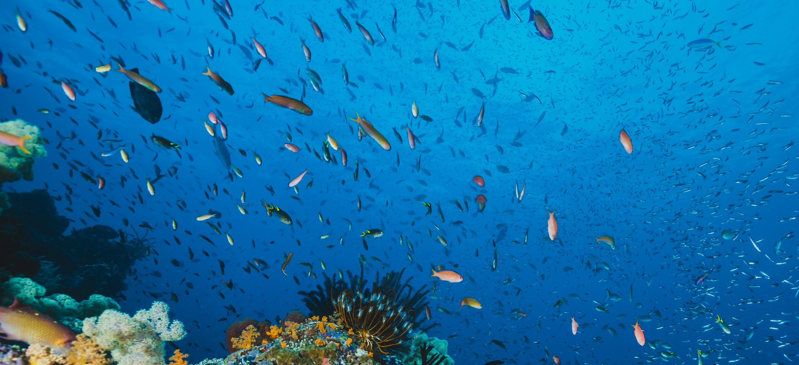

En este primer ejercicio de Diseño web avanzado el
alumno deberá completar las funciones JavaScript del archivo
script.js del presente proyecto, de forma que:
La función changeOpacity() cambiará la
opacidad del elemento <nav> que dispone del id="menu",
de forma que cuando la página esté posicionada al inicio se
verá totalmente transparente y, de forma gradual, pasará a
totalmente opaco cuando alcance la posición superior.
El alumno deberá hacer la llamada a
changeOpacity() desde el propio archivo
JavaScript a través de un evento y una
función anónima.
La función menu() abra el menú hamburguesa
si está cerrado y lo cierre cuando esté abierto, por lo que
se deberá comprobar el estado antes de realizar ninguna
acción. Esto solo será posible cuando estemos en pantalla
pequeña que es cuando se presenta el menú hamburguesa.
La función closeMenu() cerrará el menú sin
hacer comprobaciones una vez se seleccione una de las
opciones del mismo.
La función openMenu() abrirá el menú sin
hacer comprobaciones. Esta función se llamará desde menu().
La función changeImage() cambiará la imagen
del enunciado, de forma que, al pasar por encima, presentará
la imagen image_hover.jpg y, al quitar el ratón,
restaurará a la imagen image_normal.jpg.
La función checkPasswords() comprobará que
las contraseñas introducidas en los input son identicas y,
si no lo son, mostrará un mensaje de error en el párrafo con
la clase error_msg. Esta función se llamará desde
el evento onsubmit del formulario.
Este ejercicio se realizará de forma
individual.
Imagen a cambiar cuando se pasa el ratón sobre ella:

¡Regístrate como nuevo usuario!
Entrega
El alumno deberá subir al campus virtual, en el control
indicado,
solo el archivo JavaScript completado.
La fecha máxima de entrega será el
17/10/2023 a las 23:59 h. No se aceptarán
entregas fuera de plazo o que no estén subidas al campus
virtual.
La no entrega o suspenso del ejercicio no obliga al alumno a
presentarse en convocatoria extraordinaria.
Evaluación
La nota del ejercicio podrá ser alguna de las siguientes:
10 puntos: sin fallos.
8 puntos: con fallos leves.
4 puntos: con fallos graves.
0 puntos: con fallos muy graves, plagio o no entregado.
Las entregas que sean idénticas al código original (sin
modificaciones) serán consideradas como ejercicio no entregado.